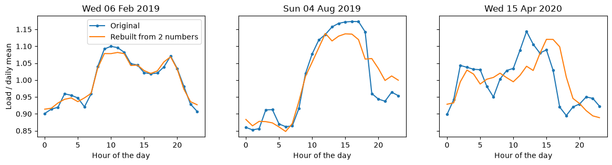
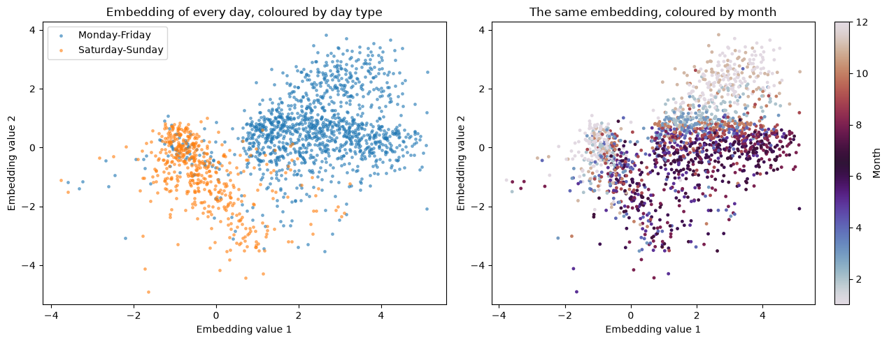
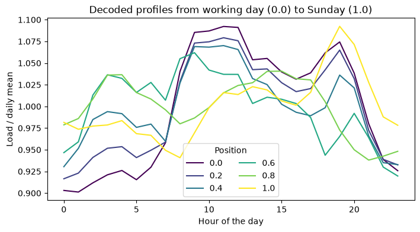
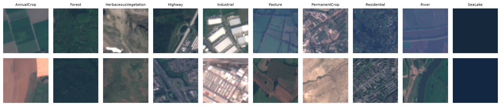
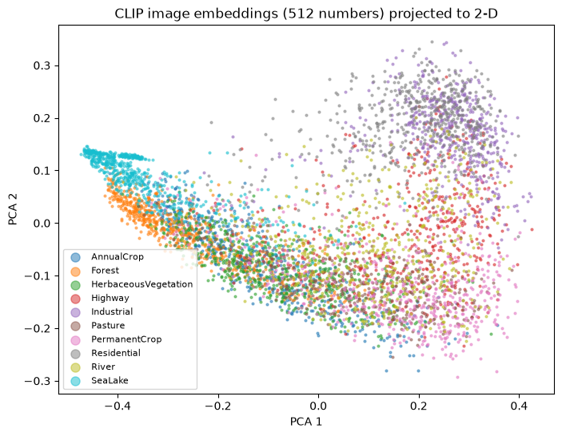
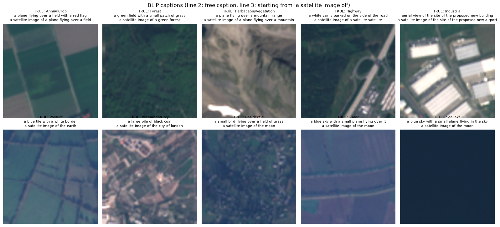

Module 3 · Multimodal foundation models
Encoders, decoders and embeddings, from load profiles to satellite images
Almost every foundation model is built from two parts: an encoder that turns raw input into a short vector of numbers (an embedding), and a decoder that turns an embedding back into an output. We build a tiny one ourselves on daily load profiles, then open up two well-known multimodal models and point them at land-use imagery.
- Part A
- Load-profile autoencoder
- Part B
- CLIP on EuroSAT
- Part C
- BLIP captioning
- Runtime (GPU)
- ≈ 60 s, cached
ENCODER EMBEDDING DECODER
raw input ─────────► a short vector that summarises the input ─────────► output
(24 hourly loads, e.g. 2, 512 or 768 numbers (24 hourly loads,
an image, a text) similar inputs → nearby vectors a caption, ...)Part A · Build an encoder–decoder in 10 lines
An autoencoder squeezes its input into a tiny embedding and must rebuild the input from it. To succeed, the embedding has to keep what matters most, and nobody tells it what that is. We feed it 1,726 Swiss daily load profiles (24 hours each, divided by the daily mean so only the shape counts).
# encoder: 24 numbers -> 2, decoder: 2 numbers -> 24
encoder = nn.Sequential(nn.Linear(24, 16), nn.Tanh(), nn.Linear(16, 2))
decoder = nn.Sequential(nn.Linear(2, 16), nn.Tanh(), nn.Linear(16, 24))
autoencoder = nn.Sequential(encoder, decoder)
for step in range(3000): # train: output should equal input
optimizer.zero_grad()
loss = nn.MSELoss()(autoencoder(train), train)
loss.backward()
optimizer.step()890 parameters (a real FM has hundreds of millions), trained on 2016–2018 in about 10 seconds. On the unseen years 2019–2020 it rebuilds each day to within 3.5% of the average load from just 2 numbers.

What did the encoder learn?

The decoder as a generator
The decoder turns any 2-D point into a profile, even points that match no real day. This is the core idea behind generative models.

A decoder is only reliable where it has seen training data. Keep this in mind for Part C.
Part B · CLIP: two encoders, one shared space
CLIP (OpenAI, 2021) has an image encoder and a text encoder, trained together on 400 million image–caption pairs so that an image and its caption land close together in the same 512-number space. That allows zero-shot classification: embed the image, embed one sentence per class, pick the most similar sentence.
We test it on EuroSAT: 5,400 Sentinel-2 tiles (64 × 64 px) of 10 land-use classes, including Residential, Industrial and Highway.

img_emb = embed_images(images) # (5400, 512), unit length
txt_emb = embed_texts([DESCRIPTIONS[c] for c in CLASSES]) # (10, 512), e.g. "residential buildings"
pred = (img_emb @ txt_emb.T).argmax(dim=1) # cosine similarity -> best class| Approach | Accuracy (10 classes) |
|---|---|
| Random guessing | 10% |
| Zero-shot, prompt "a satellite photo of {class}." | 38.3% |
| Zero-shot, plain class name "{class}" | 46.2% |
| Linear probe: logistic regression on frozen CLIP image embeddings (2,700 labelled images) | 87.6% |
Zero-shot works, but not well, and the wording of the prompt changes the result by 8 points. Is the image encoder bad at satellite images, or is the match with text the weak point? The linear probe answers it: a plain logistic regression on top of the frozen embeddings reaches 87.6%. The information is in the embeddings. The text side is the weak point, because CLIP learned from everyday photos.
probe = LogisticRegression(max_iter=2000).fit(img_emb[train_idx], labels[train_idx])
probe.score(img_emb[test_idx], labels[test_idx]) # 0.876Frozen FM encoder + a small labelled set + a simple model. It is cheap to train, needs no GPU after the embeddings are computed, and is usually far better than zero-shot. It works for images, text and time series alike.

Part C · BLIP: a decoder that writes
BLIP (Salesforce, 2022) encodes an image into 577 patch embeddings, then a text decoder writes a caption one token at a time, looking back at the image at every step. Large language models generate text the same way.
token 5: a satellite image of
token 6: a satellite image of a
token 7: a satellite image of a green
token 8: a satellite image of a green forest
A decoder can only produce what it learned from. BLIP was trained on everyday photos, so on 64 × 64 satellite tiles it falls back on familiar phrases, and they still sound right. A prompt ("a satellite image of") steers it but cannot add knowledge. Generated output must always be checked, and domain tasks need domain-trained (or fine-tuned) models.
What this means for your model
| Autoencoder | CLIP | BLIP | |
|---|---|---|---|
| Input | load profile | image + text | image (+ text prompt) |
| Encoder | 24 → 2 | image → 512, text → 512 | image → 577 × 768 |
| Decoder | 2 → 24 | none | writes text |
| Energy use | typical-day clustering, synthetic profiles, anomaly detection | land-use features for siting, building-stock tagging | generally not reliable out of domain |
- Embeddings are features. Turn images, profiles or text into fixed-length vectors and put them into the models you already use (clustering, regression, Module 2's TabPFN).
- Typical days from embeddings. The Part A embedding is a learned alternative to k-means on raw profiles for selecting representative days in capacity expansion models.
- For remote sensing, prefer remote-sensing FMs. General models like CLIP and BLIP are a starting point. Models pretrained on satellite data usually do much better.
Try next
- Set
EMBED_DIM = 4or8: lower error, but you can no longer plot the embedding directly. Which matters more for your use? - Train the linear probe with only 10 labelled images per class. How much accuracy is left?
- Write better class prompts, e.g. "an aerial view of a dense residential area". Can you beat 46%?
- Caption your own photo of a building. BLIP does much better on everyday photos.